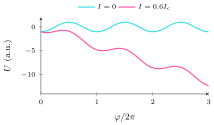

; the resistively and capacitively shunted junction model
; the resistively and capacitively shunted junction model  is a damped pendulum, overdamped when .
is a damped pendulum, overdamped when .Josephson relations (derivation, Feynman's two-level model)
Amplitudes coupled by tunnelling  (tunnelling): , , with (Josephson 1962). Separating real and imaginary parts: → (DC effect); → (AC effect: GHz/mV). Ambegaokar–Baratoff: (≈ 2 mV for Nb).
(tunnelling): , , with (Josephson 1962). Separating real and imaginary parts: → (DC effect); → (AC effect: GHz/mV). Ambegaokar–Baratoff: (≈ 2 mV for Nb).
RCSJ model and washboard
Kirchhoff with a shunt  and capacitance
and capacitance  gives the equation in the summary, i.e. a particle in the tilted washboard (Stewart 1968; McCumber 1968). Plasma frequency . For the particle rests in a well (); for it runs: average voltage (overdamped). Each
gives the equation in the summary, i.e. a particle in the tilted washboard (Stewart 1968; McCumber 1968). Plasma frequency . For the particle rests in a well (); for it runs: average voltage (overdamped). Each  slip of produces a voltage pulse with : the SFQ pulse, ~1 ps wide and ~1 mV high.
slip of produces a voltage pulse with : the SFQ pulse, ~1 ps wide and ~1 mV high.
Picture

Worked example
µA: pH; switching energy J. With  pF: rad/s ( GHz); critical damping needs Ω.
pF: rad/s ( GHz); critical damping needs Ω.
SQUID
Two junctions in a loop: — critical current periodic in flux with period  : the most sensitive magnetometer ().
: the most sensitive magnetometer ().
Engineering applications
Pitfall
Underdamped junctions () are hysteretic: once switched they stay in the voltage state; SFQ logic needs (shunted) to return to zero voltage after each pulse.